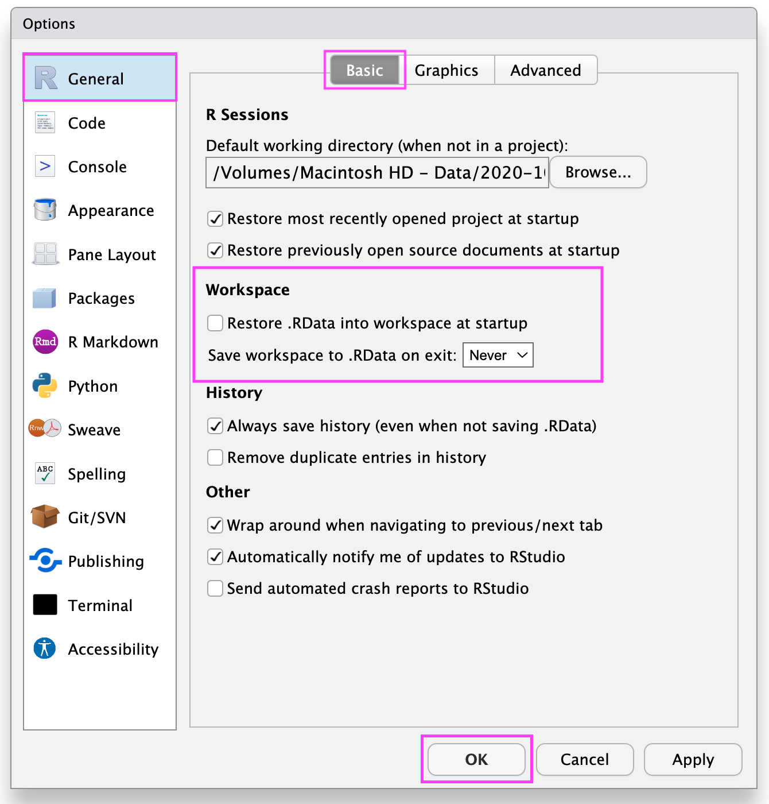
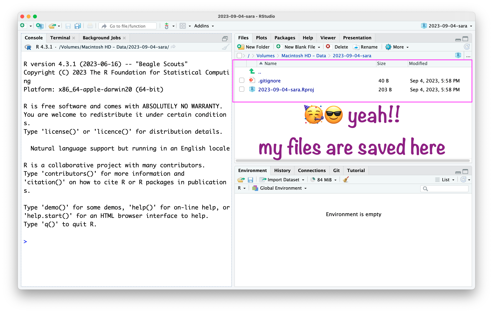
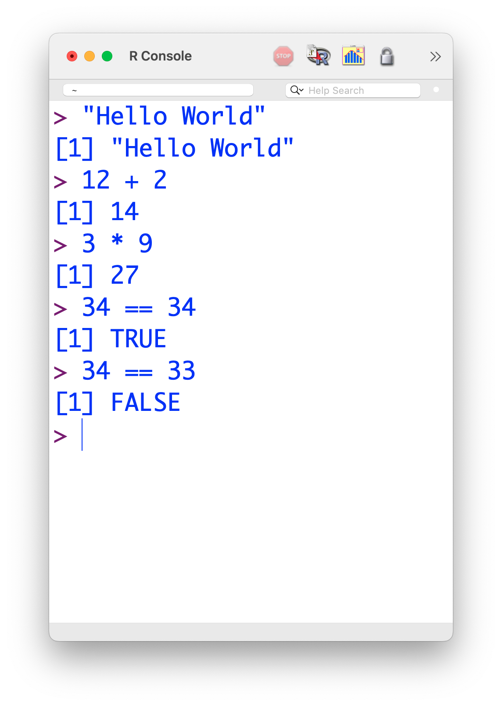
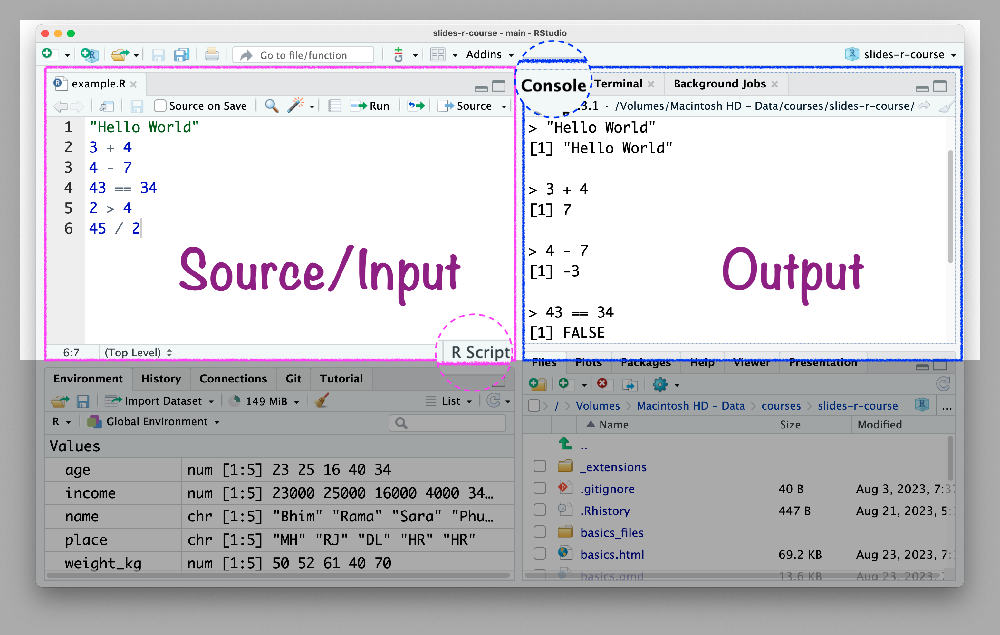

CREATING PROJECTS
USING RSTUDIO IDE
2 Days Data Science Workshop at Institute of Development Studies, Jaipur (ICSSR)
“RStudio is an integrated development environment (IDE) for R and Python from company posit.”
R and RStudio
Imagine R as a powerful engine
and RStudio as a stylish car
“It includes a console, syntax-highlighting editor that supports direct code execution, and tools for plotting, history, debugging, and workspace management.”
Download RStudio.
RStudio IDE

RStudio \(\rightarrow\) Tools \(\rightarrow\) Global Options
RStudio \(\rightarrow\) Tools \(\rightarrow\) Global Options

Open RStudio

RStudio Without Project

RStudio Without Project

RStudio Project Helps:
- “to divide your work into multiple contexts, each with their own”
- working directory,
- workspace,
- history, and
- source documents.”
RStudio
Project
in 4 Steps
Create RStudio project

Create RStudio project

In case anything goes wrong\(...\)

Create RStudio Project

Create RStudio project

Create RStudio project

Create RStudio project

Create RStudio project

RStudio project “name”

RStudio project “path”

RStudio project
R
OBJECTS
Write codes in RStudio console
Write codes in R script
R script .R
Write codes in the R script \(\rightarrow\) Console will show the results.
- Benefits of writing codes in R script:
- You can save it for later use and revision.
- You can share with others.
- A better track of codes.
üí° Tips for R script:
Writing readable code because other people might need to use your code.
Writing readable code because you might need to use your code, a few weeks/months/years after you’ve written it.
Put spaces between and around variable names and operators (
=+-*/).Break up long lines of code.
Keeping a consistent style.
R Object
In R, everything you create or work with is stored as an object.
Objects can be numbers, text, data tables, functions, or even plots.
Think of an object as a named container that stores information in your R environment.
Create Object
Assignment Operator
Important
R assignment operators: Assignment operators are used to assign values to variables.
object_name <- c(2, 3, 4, 5)
object_name
Create object
Create object
Create object
Create object
RStudio Environment Window

üí°Guidelines to ‚Äúname‚Äù R Objects:
A name cannot start with a number.
A name cannot use some special symbols, like
^,!,$,@,+,-,/, or*,:.Avoid caps.
Avoid space.
Use dash (like weight-kg) or underscore (like weight_kg).
If chronology matters then add date (2020-09-05-file-name).
Basic Object Types
| Type | Description | Example |
|---|---|---|
numeric |
Numbers (floating point) | 3.14, 2, -5 |
integer |
Whole numbers | 2L, 100L |
character |
Text strings | "R is great" |
logical |
Boolean values | TRUE, FALSE |
ü§î How to combine all these objects and form a data set?
üëá Something Like This üòªüòª
name income age place weight_kg
1 Bhim 23000 23 MH 50
2 Rama 25000 25 RJ 52
3 Sara 16000 16 DL 61
4 Phule 4000 40 HR 40
5 Savitri 34000 34 HR 70How to create a data object?
Export data as a csv file
List of all objects
R
Packages
R Packages
“An R package is a collection of functions, data, and documentation that extends the capabilities of base R. Using packages is key to the successful use of R.”
Metacran

R Packages
Install the R package
Call the R package
Update the R package
Remove the R package
Install Packages

Name of the Packages

Installed Packages

Function to Install Packages
Function to Call Package
Using Packages
You need to install package only once like:
üìö We buy books once and use them again and again
üí° Fix the bulb once and use it again and again.
Using Packages
In every R document you need to call once the package using function
library(), for example library(ggplot2).Once in a while, you need to update the installed packages as well.
If you un-install R or RStudio, you will lose all installed packages.
Tools \(\rightarrow\) Package Updates

Select Packages to Update

Click Install Updates

To Remove Packages

üßëüèΩ‚Äçüíªüë®üèΩ‚Äçüíª
Question & Answer
ü§Ø Your Turn
1. What is R mainly used for?
- Web browsing.
- Gaming.
- Data analysis and statistics.
- Drawing cartoons.
ü§Ø Your Turn
2. What is RStudio?
- A video editing software
- A web browser
- An integrated development environment (IDE) for R
- A spreadsheet tool
ü§Ø Your Turn
3. What will 2 + 3 return in R?
- 5
- 6
- 23
- Error
ü§Ø Your Turn
4. Which of the following is used to create a sequence in R?
- list()
- seq()
- loop()
- run()
ü§Ø Your Turn
5. Where do you usually type your code in RStudio?
- Console or Script Editor
- File Explorer
- Toolbar
- Help tab
ü§© Your Turn Answers
Correct answer: C) Data analysis and statistics
Correct answer: C) An integrated development environment (IDE) for R
Correct answer: A) 5
Correct answer: B) seq()
Correct answer: A) Console or Script Editor